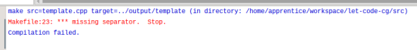

บทนำ
Computer graphics มีความน่าสนใจ
Computer graphics เป็นจุดเชื่อมของความรู้หลายสาขา เช่น computer science, engineering, art,mathematics,physics ฯล คนนำความรู้เหล่านี้มาประกอบกันเพื่อสร้างภาพมุมมองต่อ "โลก" ที่ตนกำลังมอง ทำนองเดียวกับศิลปินที่วาดภาพจากการตึความ "โลก" สิ่งที่ต่างกันคือส่งที่ถูกสร้างด้วย computer graphics คือ "digital model์" ในขณะที่ศิลปินสร้างสิ่งที่เรียกว่า "ภาพวาด" และสิ่งที่ computer graphics สามารถทำให้เกิดขึ้นได้มากกว่าคือการจำลองสถานการณ์หรือเหตุการณ์ (simulation)
การได้รับรู้หลายสาขาวิชามีความท้าทายเสมอ การตีความโลกนำมาซึ่งความคิดและมุมมองที่กว้างไกลขึ้น การสร้าง digital model และการจำลองสถานการณ์ นำมาซึ่งความสนุก สิ่งทั้งหลายเหล่านี้เกิดขึ้นได้จากการเรียนรู้ computer graphics นั่นทำให้การเรียนรู้ศาสตร์ด้านนี้มีความน่าสนใจ.
งานหลายด้านที่สามารถนำเอาความรู้ด้าน computer graphic ไปใช้ประโยชน์ ได้แก่
- การแพทย์
- วงการบันเทิง
- สถาปัตยกรรม และวิศวกรรม
- ออกแบบ เช่น Canva,Computer-Aided Design(CAD)
- วิทยาศาสตร์
- การศึกษา
- ศิลปะและวัฒนธรรม
- ฯล
เป้าหมายของโครงงานนี้
computer graphics ช่วยให้การเรียน computer coding กลายเป็นเรื่องน่าสนใจได้ ถ้าเราสามารถลดความยุ่งยากลงได้ และเรายังสามารถโยง computer graphics เข้ากับหลายเรื่องที่เป็นเรื่องของการพัฒนาการเรียนรู้ได้ เช่น ความคิดสร้างสรรค์ งานศิลปะ บันเทิง การอบรม data visualization ฯลฯ โครงงานนี้ทำขึ้นเพื่อวัตถุประสงค์ ดังกล่าว ไม่ได้พุ่งเป้าไปที่การสร้าง computer graphics coder แต่อย่างใด ดังนั้นเนื้อหาในเชิงทฤษฎีจะมีบ้างเพื่อให้เกิดความเข้าใจและโยงไปสู่การสร้าง code เท่านั้น
เครื่องมือที่เลือกใช้
โครงงานนี้เลือกใช้ ภาษา C++ เนื่องจากภาษานี้ยังคงเป็นภาษาหลักภาษาหนึ่งที่ใช้ในงานด้าน computer graphics หากท่านยังไม่มีความคุ้นเคยกับภาษานี้แต่สนใจก็สามารถศึกษาได้จากเว็บไซต์หลายๆแห่งได้ เช่น
เพื่อช่วยลดความยุ่งยากในการฝึก ผู้เขียนได้จัดทำ template.cpp ไว้เพื่อให้ง่ายต่อการทำงาน ซึ่งจะกล่าวถึงในเนื้อหาตอนต่ไป.
Library ที่ช่วยในการเขียนโปรแกรมก็มีความสำคัญ ในโครงการนี้เลือกเอา "raylib" มาใช้ ถูกพัฒนาโดยนักพัฒนาวิดีโอเกมส์ที่ใช้ชื่อบัญชีใน github ว่า raysan5. ได้รับแรงบันดาลใจมาจาก Borland Graphics Interface และ Microsoft XNA และได้ให้คำนิยามสำหรับ raylib ไว้ดังนี้.
raylib is a programming library to enjoy videogames programming. no fancy interface, no visual helpers, no gui tools or editors... just coding in pure spartan-programmers way. Are you ready to enjoy coding?
จากคำว่า "spartan-programmers" หมายถึงการใช้จำนวนชุดคำสั่งน้อยแต่ได้ประสิทธิภาพ เหมือนกับนักรบ spartan ที่มีจำนวนน้อยแต่สามารถรับมือกับ กองทัพขนาดใหญ่กว่าได้.
raylib ถูกเขียนขึ้นด้วย C99 และถูกนำไปรวม (bind) ไว้กับอีกหลายภาษา เช่น Python, C#, Lua,Go,D,Rust,Lisp ฯลฯ (ดูรายชื่อภาษาได้จากที่นี่).
คอมพิวเตอร์โดยทั่วไปมักมี processing units หลักอยู่ 2 units คือ Central Processing Unit (CPU) และ Graphics Processing Unit (GPU) หน้าที่หนึ่งของ GPU คือการกำหนดสีให้กับ pixel ทางหนึ่งที่ใช้ในการสั่งการ GPU คือการสั่งผ่าน OpenGL
Raspberry Pi ทุกรุ่นมี GPU ติดตั้งมาบนบอร์ดเรียกว่า VideoCore (บางแห่งเรียก multimedia processor) จากเอกสารประกอบทำให้ทราบว่า Raspberry Pi รุ่นตำกว่า 4 สนับสนุน OpenGL ES 2.0 และรุ่นล่าสุดสนับสนุน OpenGL 2.1
raylib รองรับ OpenGL รุ่น 1.1, 2.1, 3.3, 4.3 และ ES 2.0 . นั่นคือ raylib สามารถใช้งานบน Raspberry Pi ได้หลายรุ่น และนี่คือเหตุผลที่เลือกใช้
ความรู้พื้นฐาน
Pixel
รูปภาพที่เห็นบนจอภาพหรืออุปกรณ์แสดงผลเกิดจากการรวมตัวของหน่วยเล็กๆจำนวนมาก หน่วยเล็กๆเหล่านี้เรียกว่า pixel หรือ picture element
จำนวน pixel ที่จะมีได้ขึ้นกับจอแสดงผลและอุปกรณ์ที่เรียกว่า graphics cardจำนวน pixel ส่งผลต่อความคมชัดของภาพ
สำหรับจอแสดงผลของคอมพิวเตอร์ทั่วไปแต่ละ pixel มักเป็นรูปสี่เหลี่ยมจตุรัส แต่ละ pixel จะมี logical address logical address เฉพาะ การกระจายตัวของ pixel บนจอภาพจะอยู่ในรูปชอง grid 2 มิติ width x height หรือ columns x rows เหมือนกับตาราง เช่น 1280 x 760 หมายความว่าจะมีจำนวน pixel ในแนวนอน (columns) จำนวน 1280 pixels และในแนวตั้ง (row) 760 pixels ดังนั้นจะมีจำนวน pixels ทั้งหมด 1280 x 760 = 98,3040 pixels
หน้าที่ของ pixel คือการให้สี แต่ละ pixel แสดงค่าสีได้เพียง 1 ค่า ณ เวลาใดๆ จำนวนสีทั้งหมดที่ระบบหนึ่งจะมีได้จะขึ้นกับขนาดของข้อมูลที่กำหนดไว้ในแต่ละ pixel มีหน่วยเป็น bits per pixel (บางที่อาจเรียกว่า color depth) สมมุติว่าระบบหนึ่งใช้ bits per pixel ขนาด 8 bits จะหมายความว่าระบบนั้นสามารถแสดงผลได้ สี หรือถ้าเป็น 24 bits ก็จะสามารถแสดงสีได้ สี เป็นต้น
Coordinates
Coordinate เป็นระบบใช้ระบุตำแหน่งของ point หรือ vertice ในทางคณิตศาสตร์แล้ว pixel และ่ coordinate ไม่ใช่สิ่งเดียวกัน แต่ pixel ช่วยบอกบริเวณ (area)ที่ coordinates จะปรากฏบนหน้าจอได้
coordinates มีด้วยกันหลายระบบ ระบบที่พบได้บ่อยคือ
- Cartesian coordinates
- Polar coordinates
Cartesian Coordinates
ถูกพัฒนาโดยนักคณิตศาสตร์ชาวฝรั่งเศสชื่อ René Descartes ในช่วงศตวรรษที่ 17 เพื่อใช้เป็นตัวเชื่อมระหว่าง geometry กับ algebra การระบุตำแหน่งใช้องค์ประกอบ 3 อย่างคือ
- plane เป็นพื้นที่สมมุติ ที่ object จะวางอยู่
- Axis (แกน) ที่ตั้งฉากกัน ในระบบ 2 มิติใช้ 2 แกน X,Y ในระบบ 3 มิติใช้ 3 แกน X,Y,Z
- point ใช้ตัวเลขเต็มจำนวนเท่ากับจำนวนแกน แสดงในรูปแบบบคู่อันดับ ตัวเลขแต่ละตัวจะอิงกับจุดอ้างอิงของแต่ละแกน เรียกว่า coordinate


ใน coordinate อาจมีการระบุเครื่องหมายลบ (-) นำหน้าตัวเลข เพื่อใช้บอกทิศทางที่อิงจากจุดคงที่จุดหนึ่งเรียกว่า origin
- ถ้านำหน้าตัวเลขบน X-axis หมายถึง ตำแหน่งนั้นอยู่ทางซ้ายของ origin
- ถ้านำหน้าตัวเลขบน Y-axis หมายถึง ตำแหน่งนั้นอยู่้ด้านล่างของ origin
- ถ้านำหน้าตัวเลขบน Z-axis หมายถึง ตำแหน่งนั้นอยู่ลึกเข้าไปจาก origin
จากรูปที่ 1 และ 2 การตัดกันของแกนจะทำให้เกิดการแบ่งพื้นที่บน plane เกิดขึ้น ในแบบ 2 มิติจะได้พื้นที่ 4 ส่วน เรียกแต่ละส่วนว่า quadrant

Polar Coordinates
Polar มาจากคำว่า Pole หมายถึงขั้วหรือจุดคงที่ ต่างจากระบบ Cartesian ตรงที่การระบุตำแหน่งใช้
- ระยะห่างระหว่าง point ที่ต้องการระบุตำแหน่งกับ pole เขียนแทนด้วย หรือ
- มุมที่ทำกับแกนสมมุติเรียก polar axis (โดยทั่วไปจะใช้ X+ axis) เขียนแทนด้วย

Screen Coordinates
ตามที่กล่าวไปแล้วว่าการแสดงภาพบนหน้าจอหรือระบบแสดงผลต้องใช้ pixels ซึ่งจัดเรียงตัวในแบบตารางหรือ grid ตำแหน่งเริ่มต้นของการนับตำแหน่งคือมุมซ้ายบน เทียบกับ coordinates ในระบบ Cartesian คือ (0,0) หรือ origin

ตัวเลขตำแหน่งในแนวแกนนอนจะเพิ่มขึ้นเมื่อขยับไปทางขวาเทียบได้กับการเพิ่มขึ้นในแกน X+ ของระบบ Cartesian ตัวเลขในแนวแกนตั้งจะเพิ่มขึ้นเมื่อขยังลงมา เทียบได้กับ แกน Y+ ในระบบ Cartesian เหมือนกับการระบุตำแหน่งบนหน้าจอจะอยู่ใน quadrant ที่ 1 ของระบบ Cartesian แต่สลับบน-ล่างกัน
Color และ Color Space
การมองเห็นสีของมนุษย์คือการตีความของสมองต่อความยาวคลื่นแสงที่ตกกระทบบนเซลล์ประสาท (photoreceptor cells) ภายในดวงตาที่เรียกว่า cone cell
Cone cells มีด้วยกัน 3 ชนิดคือ
- Red sensing ตอบสนองต่อคลืนแสงช่วงสีแดง
- Green sensing ตอบสนองต่อคลืนแสงช่วงสีเขียว
- Blue sensing ตอบสนองต่อคลืนแสงช่วงสีน้ำเงิน
จากชนิดของ cone cells ที่มีอยู่ทำให้เห็นเหตุผลว่าทำไม สีแดง (Red), เขียว (Green) และ น่้ำเงิน (Blue) จึงถูกเลือกเป็นสีหลักหรือ primary colors ที่ใช้บ่อย
หลายคนคงได้เรียนรู้เรื่องการผสมสีมาแล้วเช่น เมื่อนำสีน้ำเงินผสมกับสีเหลืองจะได้สีเขียว หรือ สีแดงผสมกับสีเหลืองจะได้สีส้ม เป็นต้น หลักการนี้เกิดขึ้นได้เช่นเดียวกันในการสร้างสีที่นอกเหนือ จาก primray colors สีที่เกิดขึ้นทั้งหมดจากการผสมกันไปมาระหว่างสีที่มีอยู่แล้วเรียกว่า color space หรือ color model แต่การที่จะแสดงสีได้ทั้งหมดใน color space ได้นั้นต้องขึ้นกับระบบฮาร์ดแวร์ของระบบที่ใช้งานด้วย จำนวนสีที่สามารถแสดงได้จริงในระบบหนึ่งเรียกว่า gamut
Color spaces ที่พบได้บ่อยนอกจาก RGB

โครงสร้างข้อมูลคอมพิวเตอร์เพื่อใช้แทนค่าสีจะใช้จำนวน 3 Bytes
struct RGB {
unsigned char red;
unsigned char green;
unsigned char blue;
}
แต่ละ Byte แทนค่าสีได้ 256 ค่าสี เมื่อรวมค่าที่เป็นไปได้ทั้ง 3 Bytes จะได้ค่าสีที่เป็นไปได้ทั้งหมดใน RGB colorspace เป็น สี
การติดตั้ง Raylib บน Raspberry Pi
จะข้ามขั้นตอนการเตรียม Raspberry Pi ให้พร้อมสำหรับใช้งาน ซึ่งผุ้อ่านสามารถศึกษาเองได้จาก Raspberry Pi Documentation
สร้าง Shared libraries
จะใช้งาน raylib ต้องทำการ compile รหัสต้นฉบับ (source code)เพื่อให้ได้ shared library มา มีทางเลือก 2 ทางคือ
-
ทำตามขั้นตอนที่บอกไว้ในเอกสารจากผู้พัฒนา. หรือ
-
ใช้ shared libraries ที่ผู้เขียนก็ได้จัดทำไว้แล้วสำหรับ Raspberry Pi (ตั้งแต่ PiZero-W ไปจนถึงรุ่นล่าสุด) ที่ติดตั้งระบบปฏิบัติการ Raspberry Pi OS ซึ่งใช้ source code รุ่น 4.5.0 ดังนี้
-
ติดตั้ง system libraries
sudo apt-get install libx11-dev libxcursor-dev libxinerama-dev libxrandr-dev libxi-dev libasound2-dev mesa-common-dev libgl1-mesa-dev mesa-utils -
download shared libraries และ header files
- raylib450-rpi32.tar.gz สำหรับระบบปฎิบัติการแบบ 32 bit หรือ
- raylib450-rpi64.tar.gz สำหรับระบบปฎิบัติการแบบ 64 bit
-
สร้าง directory สำหรับ shared libraries และ header files
sudo mkdir /usr/local/lib/raylibsudo mkdir /usr/local/include/raylib -
แตกไฟลฺ์ raylib450-rpi32.tar.gz หรือ raylib450-rpi64.tar.gz
tar xzvf raylib450-rpi32.tar.gztar xzvf raylib450-rpi64.tar.gzจะพบมี directory ชื่อ include และ lib ภายในมี shared libraries และ header files อยู่
-
นำ libraylib.so.4.5.0,libraylib.so.450 และ libraylib.so ไปวางไว้ใน /usr/local/lib/raylib
sudo mv lib/*.* /usr/local/lib/raylib -
นำ header files ทั้งหมดไปวางไว้ใน /usr/local/include/raylib
sudo mv include/*.* /usr/local/include/raylib -
สร้างไฟล์ชื่อ raylib.conf ใน /etc/ld.so.conf.d/
sudo nano /etc/ld.so.conf.d/raylib.conf -
พิมพ์ข้อความ /usr/local/lib/raylib ลงใน raylib.conf แล้วทำการบันทึก (กด Ctrl-S เพื่อบันทึก แล้ว กด Ctrl-X เพื่อออกจากโปรแกรม nano)
-
แจ้งให้ system รับทราบตำแหน่งของ shared library
sudo ldconfig
-
-
เตรียมพื้นที่ทำงาน
แนะนำให้สร้าง directory สำหรับโครงงาน หรืออาจเพิ่ม sub-directory ภายในเพื่อแยกกันระหว่างส่วนที่เป็น source code และ executable ด้วยก็ได้ แล้วทำการ download 2 files ที่เตรียมไว้ให้มาเก็บไว้ใน directory ที่สร้างไว้
Makefile คือไฟล์ที่ใช้เก็บเงื่อนไขการแปลงจาก source code ไปสู่ executable หรือขั้นตอนที่เรียกว่า "build" และ template.cpp คือ ไฟล์ที่ผู้เขียนสร้างไว้เพื่อใช้เป็นต้นแบบในการสร้าง source code อื่นที่จะเรียนกันต่อไปในโครงงานนี้ต่อไป
การเตรียม Code Editor
ในโครงงานนี้ผู้เขียนจะใช้ Geany เป็น code editor (ท่านสามารถเลือกใช้ตัวอื่นได้ความถนัด) เนื่องจากเป็น text editor ที่ติดตั้งมาพร้อมใช้งานกับ Raspberry Pi OS ทุกรุ่นอยู่แล้ว อีกทั้ง Geany สามารถถูกปรับแต่งให้สามารถเรียกใช้ compiler และ run program ที่ได้ โดยไม่ต้องเปิดหน้าต่างเพื่อเรียกใช้ command ซึ่งก็ให้ความสะดวกเพียงพอแล้ว.
- เรียก Geany เปิดไฟล์ template.cpp ที่ดาวน์โหลดมาก่อนหน้า เพื่อให้ Geany รับทราบว่าไฟล์ที่กำลังใช้งานเป็นไฟล์ C++ แล้วคลิ๊ก Build บนเมนูบาร์เพื่อเรียกใช้ "Set Build Commands" ดังภาพ

- มองหา Build (ในคอลัมน์ Label) ในส่วนของ C++ commands พิมพ์ข้อความ make src=%f target=%e ในช่องตรงกลาง (คอลัมน์ Command) และ %d ในช่องที่ 3 (คอลัมน์ Working directory) ในส่วนของ Execute commands ให้เติม ./%e ในช่องตรงกลางและ %d ใ่นช่อง working directory แล้วคลิ๊ก OK

- ทดสอบโดยการกด F9 หรือ คลิ๊ก Build -> Build จากเมนูบาร์เพื่อการ build (การแปลงชุดคำสั่งให้กลายเป็น executable file) หากการติดตั้งทุกอย่างถูกต้องจะได้เห็น ข้อความ "Compilation finished successfully." ใน message window

- ในกรณีไม่สามารถ Build ได้ และพบข้อความบน Message Window Makefile:23 missing separator. Stop

ทำการแก้ไขดังนี้
- เปิด Makefile ด้วย Geany
- เลื่อนไปที่บรรทัด 23 เลื่อน cursor ไปที่หน้าอักษรตัวแรกของบรรทัดแล้วทำการเคาะแป้น Tab 1 ครับ เพื่อเพิ่มอักขระ tab เข้าไปข้างหน้าสุดของบรรทัด บันทึก
- กลับไปลอง Build ไฟล์ template.cpp อีกครั้ง ถ้ายังไม่ได้ผลให้สำรวจดูว่ามีการเติมอักขระ tab เข้าไปข้างชุดคำสั่งแล้วหรือไม่
เริ่มต้นด้วย HelloWorld
รู้จักกับ template.cpp
template.cpp ถูกสร้างเพื่อใช้เป็นแนวทางในการเขียนโปรแกรมกับ raylib โครงสร้างหลักมี 3 ส่วนคือ header files, variable declaration และ functions
graph TD;
template.cpp --> header_files;
template.cpp --> variable_declarion;
template.cpp --> function_declaration;
ส่วนของ header files จะถูกประกาศไว้ 2 files คือ raylib.h และ raymath.h เป็น header ที่ใช้สำหรับ raylib ผู้ใช้สามารถเพิ่ม header files ต่างๆได้เอง
graph TD;
header_files --> raylib.h;
header_files --> raymath.h;
ตัวแปร (variables) ที่ถูกประกาศไว้เบื้องต้นคือ
- SCR_WIDTH แทนค่าความกว้างของ screen ที่ใช้แสดงผล
- SCR_HEIGHT แทนค่าความสูงของ screen ที่ใช้แสดงผล
- cx,cy แทนตำแหน่ง (coordinates) จุดตรงกลางของ screen ที่ใช้แสดงผล
- FPS แทนอัตราเร็วของการวาด (frame per second) ตั้งไว้ที่ 60 fps
- title แทนข้อความแสดงบน title bar
ผู้ใช้สามารถเพิ่มหรือปรับแต่งค่าตัวแปรให้เหมาะสมกับการใช้งานได้
graph TD;
variable_declaraion --> SCR_WIDTH
variable_declaraion --> SCR_HEIGHT
variable_declaraion --> cy
variable_declaraion --> cx
variable_declaraion --> FPS
variable_declaraion --> titile
การทำงานของโปรแกรมถูกแบ่งออกเป็น 5 functions ดังนี้
- setup ใช้ในการกำหนดค่าเริ่มต้นให้กับตัวแปรที่ประกาศไว้ในส่วนของ variable declaration
- update ใช้ในการปรับแต่งค่าตัวแปรในระหว่างที่โปรแกรมทำงาน
- draw ใช้ในการวาดบนหน้าจอ เป็นส่วนที่ใช้ชุดคำสั่งของ raylib
- loop คือ main loop ของโปรแกรม โดยแต่ละรอบการทำงานจะไปเรียกใช้ update และ draw
- unload ใช้ล้างค่าของตัวแปรก่อนที่จะหยุดโปรแกรม
graph TD;
functions --> setup;
functions --> update;
functions --> draw;
functions --> loop;
functions --> unload;
Flow chart แสดงขั้นตอนการทำงานของโปรแกรมแสดงตามภาพข้างล่างนี้
flowchart TD;
start --> id2(variable declartion)-->id3(function declaration)-->id4(initialize variables)
id4(initialize variables)-->id5(update variables)-->id6(draw something)-->id7{exit loop}-- NO -->id5(update variables)
id7{exit loop}-- YES -->id8(unload variables)-->stop
การสร้าง Hello World Window
เริ่มต้นทำความคุ้นเคยกับ raylib ด้วยการสร้าง application window ที่มี title ว่า "Hello World".
-
เปิด template.cpp ด้วย Geany แล้วบันทึกลงในชื่อใหม่เป็น "HelloWorld.cpp"
-
เพิ่มเติมชุดคำสั่งลงใน HelloWold.cpp ดังนี้
- เพิ่ม string header file ในบรรทัดที่ 3
- เพิ่ม variables ในบรรทัดที่ 19-23

- เพิ่มคำสั่ง DrawText(...) ในบรรทัดที่ 57

-
บันทึกแล้วทำการ build ด้วยเมนูบาร์ Build หรือ กดแป้น F9

-
รอจนการ build สำเร็จ จะพบข้อความบน Message Window
-
Execute โปรแกรมที่ได้ด้วยเมนูบาร์ Execute หรือกดแป้น F5
-
การแสดงผลของโปรแกรมแรก

-
กดแป้น Esc เพื่อออกจากโปรแกรม และแป้น Enter อีกครั้งเพื่อปิดหน้า virtual terminal และกลับสู่ Geany